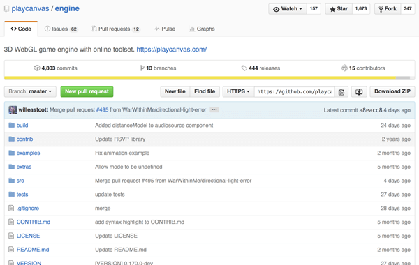
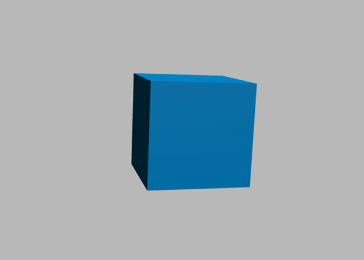
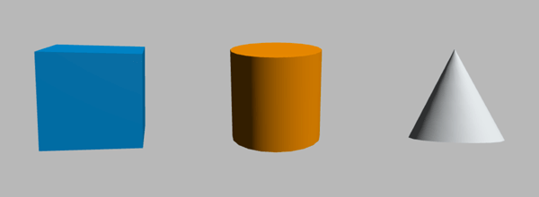

Built for modern browsers, PlayCanvas is a fully-featured 3D game engine with resource loading, an entity and component system, advanced graphics manipulation, collision and physics engine (built with ammo.js), audio, and facilities to handle control inputs from various devices (including gamepads).
That's quite an impressive list of features — let's see some in action.

We will try putting together a simple demo first — a cube rendered on the screen. If you have already worked through our Building up a basic demo with Three.js article (or you are familiar with other 3D libraries) you'll notice that PlayCanvas works on similar concepts: camera, light and objects.
To start developing with PlayCanvas, you don't need much. You should start off by:
Here's the HTML structure we will use.
<!DOCTYPE html>
<html>
<head>
<meta charset="utf-8">
<title>MDN Games: PlayCanvas demo</title>
<style>
body { margin: 0; padding: 0; }
canvas { width: 100%; height: 100%; }
</style>
</head>
<body>
<script src="playcanvas-latest.js"></script>
<canvas id="application-canvas"></canvas>
<script>
var canvas = document.getElementById("application-canvas");
/* all our JavaScript code goes here */
</script>
</body>
</html>
It contains some basic information like the document {{htmlelement("title")}}, and some CSS to set the width and height of the {{htmlelement("canvas")}} element that PlayCanvas will use to 100% so that it will fill the entire available viewport space. The first {{htmlelement("script")}} element includes the PlayCanvas library in the page; we will write our example code in the second one. There is one helper variable already included, which will store a reference to the {{htmlelement("canvas")}} element.
Before reading on, copy this code to a new text file and save it in your working directory as index.html.
To begin developing our game we have to create the PlayCanvas application first (using the given {{htmlelement("canvas")}} element), and then start the update loop. Add the following code to the bottom of your second {{htmlelement("script")}} element:
var app = new pc.Application(canvas); app.start();
The pc global object contains all the PlayCanvas functions available in the engine.
Next, we'll set the Canvas to fill the window, and automatically change its resolution to be the same as the Canvas size. Again, add the following lines at the bottom of your script.
app.setCanvasFillMode(pc.FILLMODE_FILL_WINDOW); app.setCanvasResolution(pc.RESOLUTION_AUTO);
Now when the setup code is in place we need to think about implementing the standard scene components: camera, lights and objects. Let's start with the camera — add these lines to your code, below the previous ones.
var camera = new pc.Entity();
camera.addComponent("camera", {
clearColor: new pc.Color(0.8, 0.8, 0.8)
});
app.root.addChild(camera);
camera.setPosition(0, 0, 7);
The code above will create a new Entity.
Note: An Entity is any object used in the scene — it can be an object like a box, cylinder or cone, but it can also be a camera, light or sound source.
Then it adds a camera component to it with the light gray clearColor — the color will be visible as the background. Next, the camera object is added to the root of our application and positioned to be 7 units away from the center of the scene on the z axis. This allows us to make some space to visualize the objects that we will create later on.
Note: The distance values (e.g. for the camera z position) are unitless, and can basically be anything you deem suitable for your scene — millimeters, meters, feet, or miles — it's up to you.
Try saving the file and loading it in your browser. You should now see a gray window. Congratulations!
Now the scene is properly rendering we can start adding 3D shapes to it. To speed up development PlayCanvas provides a bunch of predefined primitives that you can use to create shapes instantly in a single line of code. There are cubes, spheres, cylinders and more complicated shapes available. Drawing everything for given shape is taken care of by the engine, so we can focus on the high level coding. Let's start by defining the geometry for a cube shape — add the following new code below your previous additions:
var box = new pc.Entity();
box.addComponent("model", { type: "box" });
app.root.addChild(box);
box.rotate(10, 15, 0);
It will create an Entity with the box model component and add it to the root of the application, our scene. We also rotate the box a bit to show that it's actually a 3D cube and not a square.
The cube is visible, but it is completely. To make it look better we need to shine some light onto it.
The basic light types in PlayCanvas are directional and ambient. The first type is a directional light placed somewhere on the scene while the second one reflects the light from the first type, so it looks more natural; this can be set globally. Again, add the new code below your previous additions.
var light = new pc.Entity();
light.addComponent('light');
app.root.addChild(light);
light.rotate(45, 0, 0);
It will create a light Entity component and add it to the scene. We can rotate the light on the x axis to make it shine on more than one side of the cube. It's time to add the ambient light:
app.scene.ambientLight = new pc.Color(0.2, 0.2, 0.2);
The code above assign a dark grey ambient light for the whole scene. The box look better now, but it could get some colors to look even better - for that we need to create material for it.
The basic PlayCanvas material is called PhongMaterial — add the following lines below the previous code.
var boxMaterial = new pc.PhongMaterial(); boxMaterial.diffuse.set(0, 0.58, 0.86); boxMaterial.update(); box.model.model.meshInstances[0].material = boxMaterial;
By diffusing the light on the object we can give it it's own color —we'll choose a nice familiar blue.
Note: In PlayCanvas, the color channel values are provided as floats in the range 0-1, instead of integers of 0-255 as you might be used to using on the Web.
After the material is created and its color is set, it has to be updated so our changes are going to be applied. Then all we need to do is set the box's material to the newly created boxMaterial.
Congratulations, you've created your first object in a 3D environment using PlayCanvas! It was easier than you thought, right? Here's how it should look:

And here's the code we have created so far:
{{JSFiddleEmbed("https://jsfiddle.net/end3r/cqs6pg3x/","","350")}}
You can also check it out on GitHub.
Now we will add more shapes to the scene. Let's move the cube 2 units to the left to make space for some friends — add the following line just below the previous code:
box.translate(-2, 0, 0);
Now let's add a new shape — how about a cylinder?
Add the following lines at the bottom of your JavaScript code:
var cylinder = new pc.Entity();
cylinder.addComponent("model", { type: "cylinder" });
app.root.addChild(cylinder);
cylinder.rotate(15, 0, 0);
This looks very similar to the code we used for creating a cube, but instead of the box component we are adding a cylinder. It is also rotated around the x axis to show it's actually a 3D shape. To make the cylinder have a color, let's say yellow, we need to create the material for it, as before. Add the following lines:
var cylinderMaterial = new pc.PhongMaterial(); cylinderMaterial.diffuse.set(1, 0.58, 0); cylinderMaterial.update(); cylinder.model.model.meshInstances[0].material = cylinderMaterial;
Creating a cone and its material is done in almost exactly the same way as we did for the cylinder. Add the following code, again, at the bottom of your script:
var cone = new pc.Entity();
cone.addComponent("model", { type: "cone" });
app.root.addChild(cone);
cone.translate(2, 0, 0);
var coneMaterial = new pc.PhongMaterial();
coneMaterial.diffuse.set(0.9, 0.9, 0.9);
coneMaterial.update();
cone.model.model.meshInstances[0].material = coneMaterial;
The code above will create a new cone, add it to the app and move it by 2 units to the right so it's not overlapping the cylinder. Then the material is created, given a gray color, and assigned to the cone Entity.
Here's how it should look right now:

This works, but it is a bit boring. In a game something is usually happening — we can see animations and such — so let's try to breathe a little life into those shapes by animating them.
We already used translate or rotate to adjust the position of the shapes; we could also change their positions directly with setPosition, or scale them. To show actual animation, we need to make changes to these values inside the rendering loop, so they are updated on every frame. There's a special update event that we can use for that — add the following code just below the previous additions:
var timer = 0;
app.on("update", function (deltaTime) {
timer += deltaTime;
// code executed on every frame
});
The callback takes the deltaTime as the parameter, so we have the relative time that has passed since the previous invocation of this update. For time based animations we'll use a timer variable that will store the time that has passed since the start of the app by adding the deltaTime to it on every update.
Rotating is quite easy — all you need to do is to add a defined value to the given direction of rotation on each frame. Add this line of code inside the app.on("update") callback function, right after the addition of the deltaTime to the timer variable:
box.rotate(deltaTime*10, deltaTime*20, deltaTime*30);
It will rotate the box by deltaTime*10 on the x axis, deltaTime*20 on the y axis and deltaTime*30 on the z axis, on very frame — giving us a smooth animation.
We can also scale a given object — there's a function for that called setLocalScale. Add the following, again into the callback:
cylinder.setLocalScale(1, Math.abs(Math.sin(timer)), 1);
Here we are using Math.sin to scale the cylinder in a cycle, bigger and smaller again. We're wrapping the y scale value in Math.abs to pass the absolute values (greater or equal to 0); sin varies between -1 and 0, and for negative values the cylinder scaling can render unexpectedly (in this case it looks black half the time.)
Now onto the movement part.
Beside rotation and scaling we can also move objects around the scene. Add the following code to achieve that.
cone.setPosition(2, Math.sin(timer*2), 0);
This will move the cone up and down by applying the sin value to the y axis on each frame, with a little bit of adjustment to make it look cooler. Try changing the value to see how it affects the animation.
Here's the final code listing, along with a viewable live example:
{{JSFiddleEmbed("https://jsfiddle.net/end3r/auvcLoc4/","","350")}}
You can also see it on GitHub and fork the repository if you want to play with it yourself locally. Now you know the basics of PlayCanvas engine; happy experimentation!
Now you can continue reading the PlayCanvas editor article, go back to the Building up a basic demo with PlayCanvas page, or go back a level higher to the main 3D Games on the Web page.